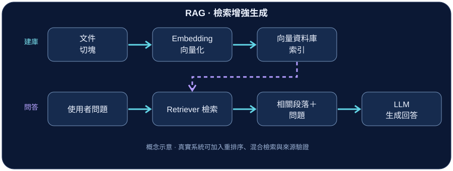

01 · 技術介紹
檢索增強生成（Retrieval-Augmented Generation, RAG）結合資訊檢索與語言生成：系統先找到與問題相關的外部資料，再將資料作為上下文交給語言模型產生回答。
其核心優勢在於不必把所有專屬文件內容都記憶到模型參數中，就有機會利用更新的知識來源回答問題；但檢索正確也不代表最後回答一定正確。
02 · 核心概念
把 RAG 想成「開卷考試」：回答之前先查資料，再綜合資料寫出答案。若找到的頁面不相關或資訊不足，答案仍可能出錯。
- 知識庫：保存文件及可供搜尋的表示形式。
- Embedding（向量表示）：把文字轉成數值向量，協助比較語意相關程度。
- Retriever（檢索器）：從知識庫取回與問題相關的片段。
03 · 技術原理
離線建庫與線上問答
建庫階段：文件收集 → 文字清理 → 切塊（Chunking）→ 向量化 → 儲存索引與來源資訊。
問答階段：使用者問題 → 檢索相關片段 → 組合問題與證據 → 語言模型生成回答。
注意：向量分數是相似度或距離指標，不等於答案正確率。高排名片段仍須確認是否真正支持回答。
04 · 運作流程

- 準備知識：整理可信文件並建立可檢索索引。
- 提出問題：將問題轉成適合檢索的表示。
- 取回內容：依相關程度找到數個文件片段。
- 生成答案：要求 LLM 根據取回內容回答，必要時附上來源。
05 · 實際應用
- 校園規章問答：查詢修業辦法、選課與行政程序。
- 產品文件助手：從操作手冊查找使用方法和故障排除說明。
- 企業內部知識查詢：檢索經授權的政策與技術文件。
部署時需考慮文件更新、存取權限、來源追蹤與避免將敏感資訊送入不合適的服務。
06 · 重點整理
- RAG 的基本流程是先檢索，再生成。
- 文件切塊、向量模型與檢索品質都會影響回答結果。
- 引用來源能增加可查證性，但引用本身不保證回答正確。
- 找不到足夠證據時，應讓系統明確表示不確定。
參考資料
下列連結提供進一步查證的官方資料及論文；本文為入門性教學整理，流程圖為本站自繪概念示意。